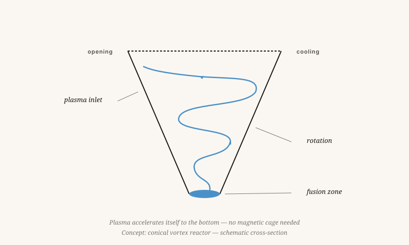

A fusion reactor without a magnetic cage
ITER and JET spend billions confining plasma with magnets. My proposal: let the plasma confine itself — through rotation.
By Jacobus van Merksteijn · 11 min read · 23 May 2026

The controlled vortex — after Tesla
The problem is not technical — it is conceptual
ITER, JET, Wendelstein-7X. Billions, decades, and still no net energy. Since 1955 fusion has been promised "within thirty years". We are now seventy years on. That is no coincidence. That is a sign that the concept does not work.
Current reactors try to confine plasma with magnets within a four-dimensional frame of thinking. Plasma does not comply. It escapes along paths you only see when you include G (scale) and W (value).
The G-mismatch
Plasma is a collection of charged particles with enormously different masses: electrons are 1,836 times lighter than protons. Magnets work at the large scale. The escape routes sit at the small scale. Whoever does not address the small scale separately will always lose the plasma.
The conical vortex reactor
A conical vortex is a funnel-shaped reactor in which plasma is not confined but accelerated in a rotating flow — like water in a vortex. The rotation provides the confining force.
The cone shape provides compression as the plasma approaches the base: the closer to the tip, the faster the rotation, the higher the density, the greater the chance of fusion.
The parallel with fluid dynamics is no coincidence. A tornado is also a confined bundle of energy that exists by virtue of its own rotation — nobody confines a tornado in a cage.

Advantages against three open questions
Advantages
- No exotic superconductors. ITER uses magnets cooled to −269°C. A vortex reactor needs far less powerful magnets.
- Continuous rather than pulsed. The rotation can be sustained, like a fountain that keeps flowing. Tokamaks operate in pulses of a few seconds.
- Self-regulating. A flow responds to disturbances by correcting itself. A magnetic confinement responds by collapsing.
Open challenges
- Initial start-up. How do you get the first rotation going? A combination of magnetic impulse plus inertia injection might work.
- Wall material. Radiation and neutrons strike the wall differently from in a tokamak — whether better or worse is still an open question.
- Energy extraction. How do you draw out the fusion heat without disrupting the rotation? A jacket flow with helium cooling would work but requires precise tuning.
Run the experiment
I am not a plasma physicist by profession. What I do have is a hunch grounded in decades of work with flows — water around ship hulls, air around wings, biomass through injectors. Flows do what they do, regardless of the medium.
A serious second bet
What I am asking is not: "believe me." It is: "run the experiment." A small-scale conical reactor costs no billions — a few million, a good team, and a few years. In a Nova Democratia model an independent panel could decide to direct five per cent of the fusion budget toward unorthodox designs.
A fusion reactor without a magnetic cage
ITER is spending twenty billion euros to confine plasma with magnets. The alternative: let the plasma confine itself through rotation.
Since 1955, fusion has been promised "within thirty years." Seventy years have now passed. ITER, JET, Wendelstein-7X — billions of euros, still no net energy. That is not bad luck; it is a sign that the concept does not work. The problem is not technical but conceptual: plasma escapes along routes you only see once you factor in the scale law G. Electrons are 1,836 times lighter than protons; magnets operate at the large scale while the escape routes sit at the small scale.
The conical vortex reactor is a funnel-shaped device in which plasma is not confined but accelerated in a rotating flow — like water in a vortex. The cone shape produces compression as the plasma approaches the bottom: the closer to the tip, the faster the rotation, the higher the density, the greater the chance of fusion. The parallel with a tornado is not coincidental — nobody confines a tornado in a cage.
Advantages: no superconducting magnets cooled to minus 269 degrees; continuous operation rather than pulses of a few seconds; self-regulating behaviour. Open questions: the initial start-up, wall materials, and extracting energy without disturbing the rotation.
What I am asking for
Not "believe me" — but "do the experiment." A small conical reactor does not cost billions: a few million, a good team, a few years. Within a Nova Democratia model, an independent panel could allocate five per cent of the fusion budget to unorthodox designs. Flows do what they do, regardless of the medium.